Agile Methods¶
Agile methods are groups of practices of piloting and realization of projects. They originate from the Agile Manifesto, written in 2001, which uses the term “agile” to refer to multiple existing methods.
Agile methods are more pragmatic than traditional methods, involve the client as much as possible and allow a great reactivity to his requests. They are based on an iterative, incremental and adaptive development cycle and must respect four fundamental values, based on twelve principles, from which a base of practices, either common or complementary, derives.
KanBan¶
The Kanban methodology comes from the Japanese automotive industry. It was created with the aim of optimizing the production capacity.
The Kanban method is based on the continuous improvement of production processes to enable lean production management.
Kanban Screen
The Kanban approach is a stock management method that allows you to produce on demand.
The main objective is to balance production and demand.
With Kanban, you can create a new Kanban board for
- Tickets,
- Activities,
- Actions,
- Requirements
- Add / Remove columns to an existing Kanban board
- Direct update of elements
Dashboard management
Header area
Interface areas:
You can see the complete list of created tables by clicking on the Kanbans drop-down list in the My Kanbans section.
The icon used for kanban tables created corresponds to the type of elements selected.
You can see the shared kanban tables by others users on the shared Kanbans section.
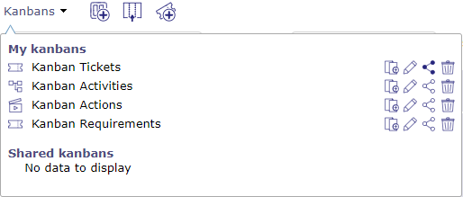List of existing kanban

Create a new table
When using kanban for the first time, a kanban map is created for the current user.
It’s a kanban of tickets where the columns are based on the status.
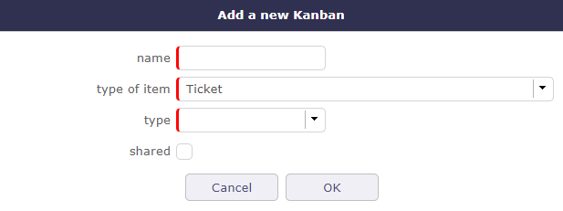Add a new kanban table
You will need to define:
- Name for the new Kanban board
- Type of item: you can define a Kanban of Tickets, Activities, Actions or Requirements
When you have selected the item type, you must then define the type of Kanban board to apply:
- Status: you will manage the most standard “status based” kanban board
- Target product version: you can distribute the tickets among the target product version
- Planning activity: You will be able to send tickets among planning activities, which can be your Sprints in the Scrum method.
See also
See Planning activity on the tickets screen
You can choose directly if you want to share the newly created kanban with other users so that they can use it.
When you share a Kanban, other users will see your share in the list of shared Kanbans.
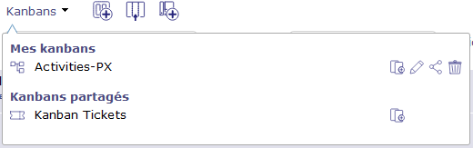Each time you access the Kanban screen, the last selected Kanban map is displayed.
By default, when you create a new Kanban table, it gets a single column.
- Click on
to create a new Column
The pop up is different depending on the type of kanban board created beforehand.
In the case of a status arrangement, the columns contain items from one status to another in the order of presence of your workflow.
The next column will show the next status following your workflow to the last or the status you have determined.
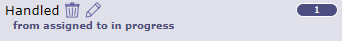Details header column
Each column indicates the number of elements contained in.
The creation button change depending on the type of the element selected.

{kind=link}
{kind=link}
{kind=link}
{kind=link}
{kind=link}
{kind=link}
{kind=link}
{kind=link}
{kind=link}
{kind=link}
{kind=link}
{kind=link}
{kind=link}
Click the icon to set an advanced filter.
The advanced filter is used to define a clause to filter and sort
for more information on advanced filters
Show work on elements
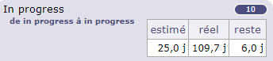You can view the work information of items on each column.
The estimated work, actual work, and work remaining information on the selected item can be displayed
If your profile is not allowed to see the job, you will not have access to this option.
The format for displaying the job (days or hours) depends on the overall configuration:
- unit for real work allocation for Tickets
- unit for workload for Activities
Show closed items
You switch to archive mode. You can view the closed elements.
Show large element
By default, Kanban board columns display two tiles side by side.
By displaying the tiles in wide mode, each tile takes the maximum width of the column.
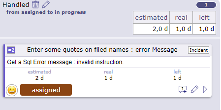Wide kanban board display
Element management
Find below the details of the tiles of your kanbans
Details of an element
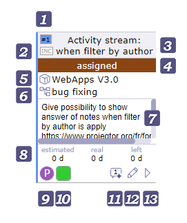ID of the element with in the background the project color
Status in which the tile is located in relation to your Workflow
The planning activity or parent activity related to the element
The description of the element
Estimated work | Real work | Left work
Responsible of work Photo - The name is displayed on mouse over
Priority of the element - Priorities are customizable. See list of values
Edit an element
Click on to save the modification.
If a checklist is available then click on the icon to display it.
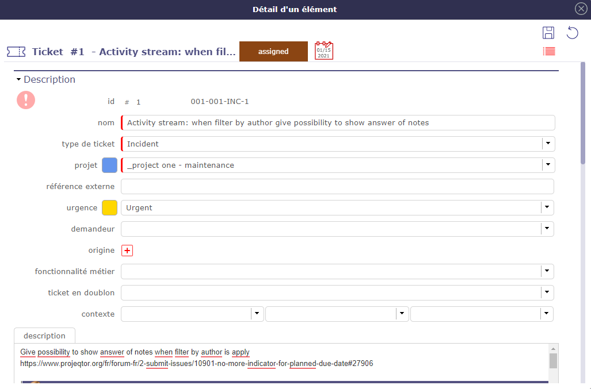Edit element window
Moves an element
To move tickets, activities, or anything else from your kanban, drag and drop a ticket into the corresponding column.
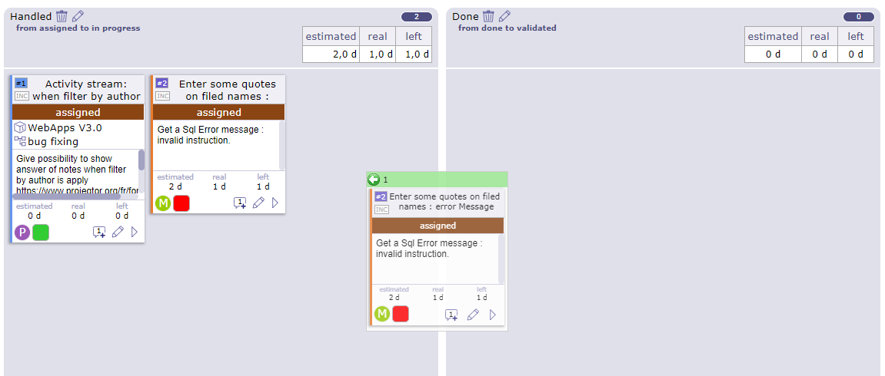Move an element
The heading of the moved element then changes to green when it is on a column where the movement is allowed and is red when it is on a column where the movement is prohibited.
If the Kanban is arranged as statuses, the new status after move, will be the first status of the range defined for the column.
For Kanbans based on the target product version and planning activities, the new field value will simply be the target.
Forbidden moves
Displacements will change the value of the corresponding field for the moved element.
But the “status” change must respect the workflow configuration for the given item type. This is why some movements are prohibited.
Permitted moves are easily identified from prohibited moves by the color of the Ticket header or the moved Activity.
Updating
Depending on the configuration of the ticket type, some state changes may require the definition of new fields.
For example, in the default configuration, when changing to the “assigned” state, “responsible” is required, and when transitioning to the “terminated” state, “result” is required “.
In this case, when you move a ticket in the Kanban columns, a pop-up window appears to allow you to enter the missing value if it is not already defined.
{kind=link}
{kind=link}
{kind=link}
{kind=link}
{kind=link}
{kind=link}
{kind=link}
Live Meeting¶
LiveMeeting allow you to manage meetings in an agile way:
- Manage minutes of meetings quickly
- Automatically share the time between all participants
- Dynamically measure the speaking time of each participant
- Easily write minutes while assistants speak
- Easily manage actions / decisions / questions while writing minutes
- Manage tickets, activities, actions and requirements with Kanban while writing minutes.
The Live Meeting button
Click this button to access the Live Meeting Management screen.

The Live Meeting screen
- Click on Hide time counters to show or hide participants’ tabs with their speaking time
- Click on to exit the LiveMeeting screen
- Click on to manage your kanbans since the livemeeting
- Click on 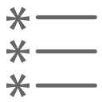 to display the QUestions / Actions and Decisions
- Click on to save the live meeting report
{kind=link}
{kind=link}
{kind=link}
Starting a meeting
When the Live Meeting screen opens, the duration of the meeting is automatically distributed equally to all participants.

Time distribution
- Click on
 to start the meeting and to start decrementing the speaking time
to start the meeting and to start decrementing the speaking time - Click on To stop the meeting and therefore close the LiveMeeting window to return to the current meeting screen
- Click on
 to pause the speaker’s time
to pause the speaker’s time
{kind=link}
Set the organizer
Before starting the meeting, you can define an organizer who will need additional speaking time to be able to lead the meeting.
To designate it, click twice on the hourglass
to obtain the symbol on the icon.
The organizer is designated, and sees his time increment double by taking equitable time on the other participants.
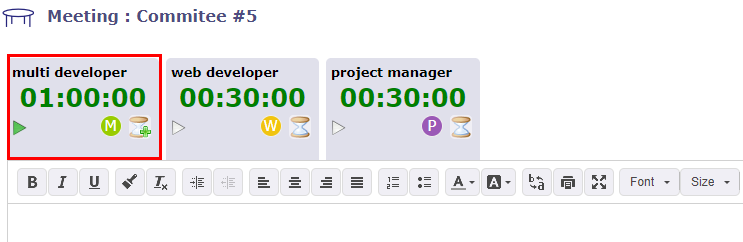The designated organizer has a PLus on the hourglass icon of his tab
Note that only one participant can be defined as an organizer.
To set another participant as an organizer, you must first redefine the current organizer as a normal participant by clicking the hourglass button again.
Speaking Time
If you started the meeting by clicking on the Play icon at the top right of the screen, then this is the first speaker displayed, the one with the green sign that will begin speaking.
Otherwise, click on the speaker’s tab of your choice to start your speaking time.
- Click on
to prevent a speaker from speaking
- Click on
If you prevent a speaker’s speaking time by clicking on the hourglass, then the remaining speaking time of the speaker will be redistributed to the other participants entitled to speak.
Write a meeting report
During the course of the meeting, the person in charge of the report can inform and report the words of the various participants.
The text editor is dynamic and reacts to speakers who have the floor.
When one speaker is finished and another speaker speaks, a field is added in the text editor with the name of the speaker with the detail of the time
The pause is also mentioned always with the detail of the time.
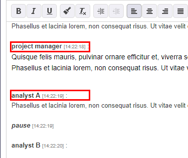Field with the speaker’s name
When you stop LiveMeeting by clicking | meetingStop | the meeting report is automatically copied to the Minutes field in the treatment section.
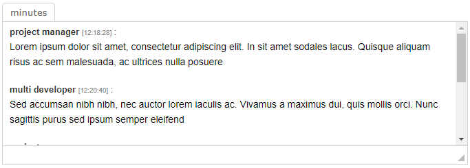The meeting report is copied in the minutes field in the treament section
Actions, Decisions and Actions
In the lower part of the screen, if the kanban is not open, you have direct access to actions, decisions and questions.
Actions, Decisions, Questions Management
Each list acts as the standard “linked element” element present on almost every element screen.
You can then list an item to add it to the list of related items, but also create a new item to add to the list, just like for the Linked Items feature.
All linked items through this feature will appear in linked items in the meeting.
There is a slight difference with related items, when you click on the name of an item, you are not redirected to it.
It simply opens in a pop-up form, allowing you to update it without leaving the LiveMeeting screen.
New element
You can create, edit, or delete an action, decision, or question from the live meeting screen.
Click on
at the top right of each section to add a new element
A pop up opens and allows you to create and edit the selected element.
You can also create a new item directly.
Fill in the fields with an explicit title and click on
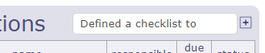Add a new element
The line is displayed directly in the corresponding section without opening the pop up
{kind=link}
{kind=link}
{kind=link}
{kind=link}